Through this homework, we gained a deeper understanding of the power of parametric curves and surfaces in computer graphics, the importance of efficient data structures (like half-edge) for mesh manipulation, and how simple operations can be combined to create complex geometric transformations.
Section I: Bezier Curves and Surfaces
Part 1: Bezier curves with 1D de Casteljau subdivision
De Casteljau algorithm: a method used in graphics to evaluate points on a Bézier curve,
it allows you to find a specific point on the curve based on a parameter value "t" by
repeatedly performing linear interpolation between control points that define the curve.
To implement de Casteljau's algorithm for evaluating Bézier curves:
Start with the control points of the curve.
For a given parameter t (0 ≤ t ≤ 1), perform linear interpolation between adjacent pairs of points.
Repeat this process, creating new sets of points with each iteration.
Continue until you reach a single point, which is the point on the curve at parameter t.
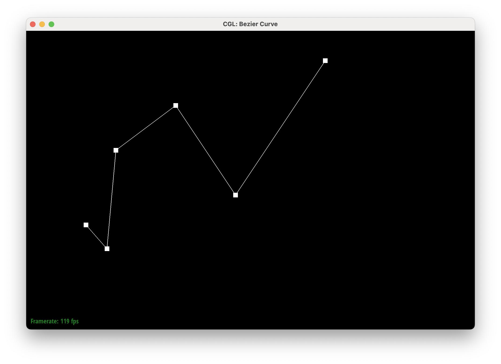
Initial blank (no interpolation yet).
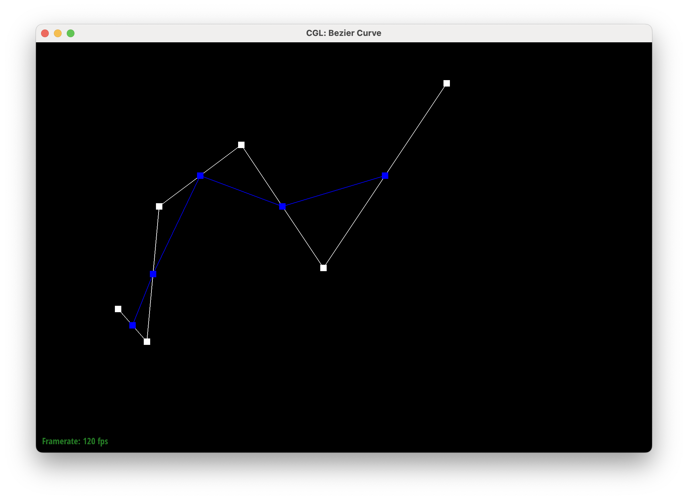
Interpolation Step 1.
Interpolation Step 2.
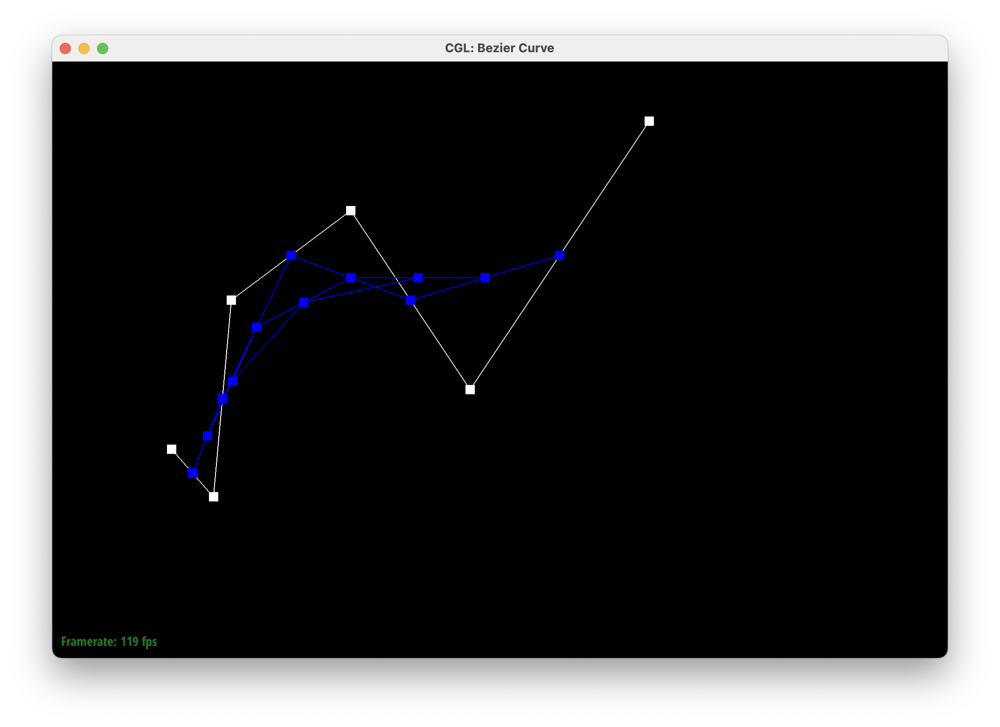
Interpolation Step 3.
Interpolation Step 4.
Interpolation Step 5.
Final Bezier Curve (t as originally set).
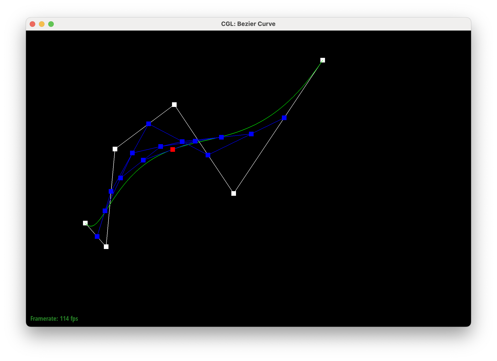
Bezier Curve with a different t.
Bezier Curve Animation.
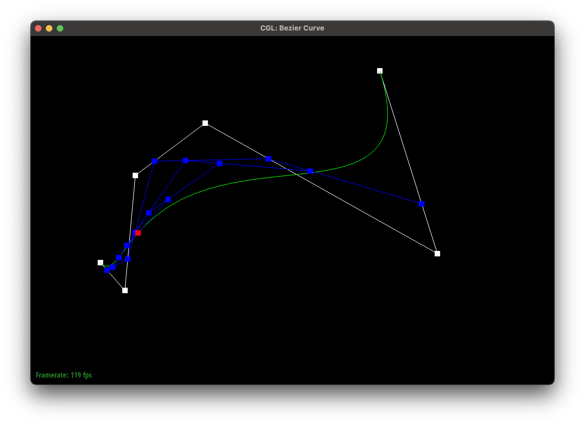
Bezier Curve with a different t and control point.
Part 2: Bezier surfaces with separable 1D de Casteljau
De Casteljau's algorithm extends to Bezier surfaces by applying the concept of separable 1D de Casteljau.
First, you use the algorithm to draw four curves along one direction (let's call it u).
These curves are based on the rows of your control point grid as shown in lecture.
Then, you take the points you found on these curves and use them to make a new curve going in the other direction (v).
When you evaluate this final curve, you get your surface point.
In my code, I did this by first running de Casteljau's algorithm on each row of control points for a given u value.
This gave me new points.
Then I used these points as the control points for the evaluate step function in the perpendicular direction.
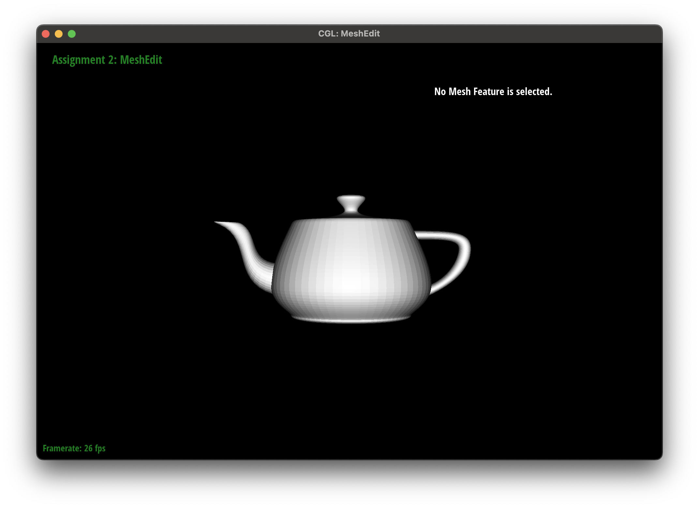
Teapot from bezier surfaces
Section II: Triangle Meshes and Half-Edge Data Structure
Part 3: Area-weighted vertex normals
Some intuition for this problem is that we want to compute the normal for each vertex by taking a weighted average of the normals of the faces that share the vertex.
This is because at the vertex there exists discontinuities from the different normals of the adjacent faces as shown in the video screenshot below.
Therefore we want to smooth out the normals at the vertices by taking a weighted average of the normals of the adjacent faces.
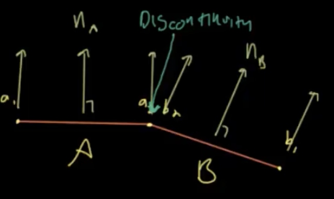
Normals Intuition [Rodriguez]
We computed the area-weighted vertex normal using the half-edge data structure
by following these steps:
We iterate through all faces connected to the vertex, stopping when it completes a full cycle.
Each face (except boundary faces) provides three vertex positions. Two edge vectors are calculated,
and the face normal is found using the cross product. The triangle’s area is half the length of this normal.
The normal is then converted to a unit vector.
The normalized face normal is multiplied by the triangle’s area and added to the total normal.
The accumulated normal is then normalized to ensure it has a unit length. This ensures that larger faces contribute more to the vertex normal, leading to a smooth
and accurate representation of the geometry.
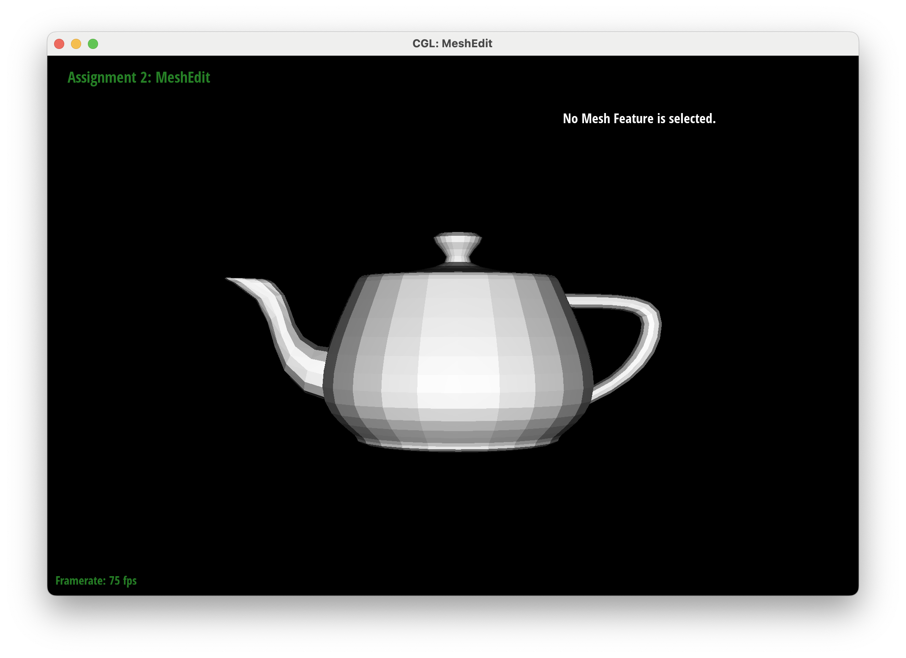
Teapot with Flat Shading
Teapot with Phong Shading
Part 4: Edge flip
We implemented the edge flip operation by first checking that the edge isn’t on the boundary, then using the provided diagram to reference and keep track of all the half-edges, vertices, edges, and faces involved, as shown in the code above. The process involved gathering the relevant half-edge pointers and then reassigning them with setNeighbors to update the connectivity between the two adjacent triangles. Along the way, we found that using commented-out alternative assignments was a helpful debugging trick, allowing us to test different configurations and ensure that every pointer was correctly updated, which ultimately made it easier to maintain a consistent and valid mesh structure after the flip.
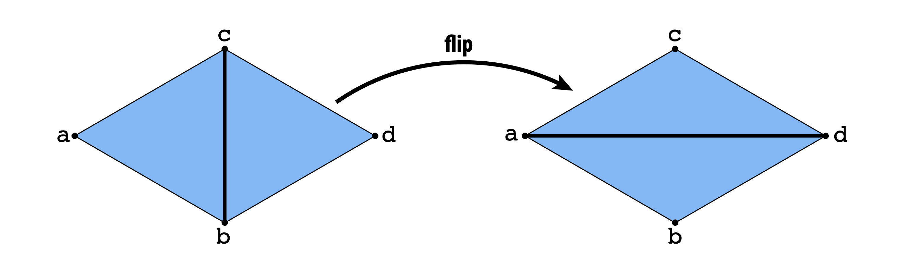
Edge Flip Diagram [Lecture 8]
Teapot Before Edge Flip
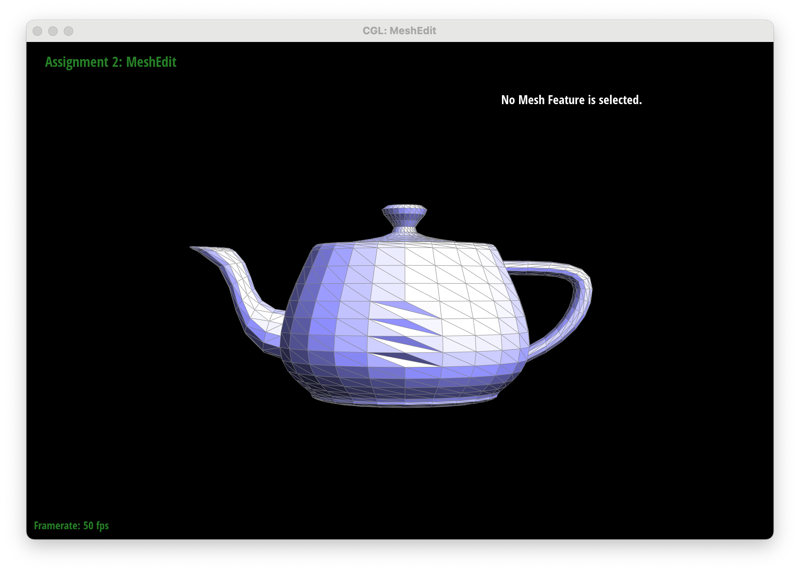
Teapot After Edge Flip
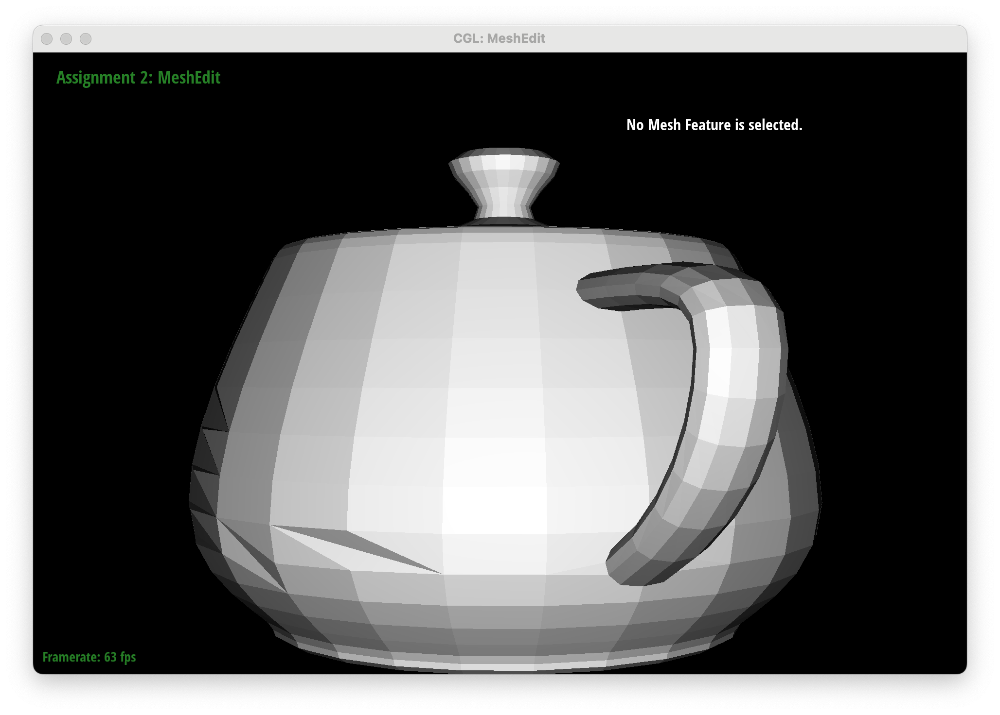
Side View of the Dented Teapot
Part 5: Edge split
We implemented the edge split operation by first checking if the edge is on the boundary, and if not, creating new half-edges, edges, and faces to insert a new vertex at the midpoint. We then updated the connectivity using setNeighbors to reassign the pointers for vertices, edges, and faces, following the logic shown in the code above. We also drew our own diagram to label the new edges, which made it easier to keep track of all the changes. It was a challenging debugging process, but we eventually found a missing half edge that resolved the issue and ensured the mesh structure remained consistent.
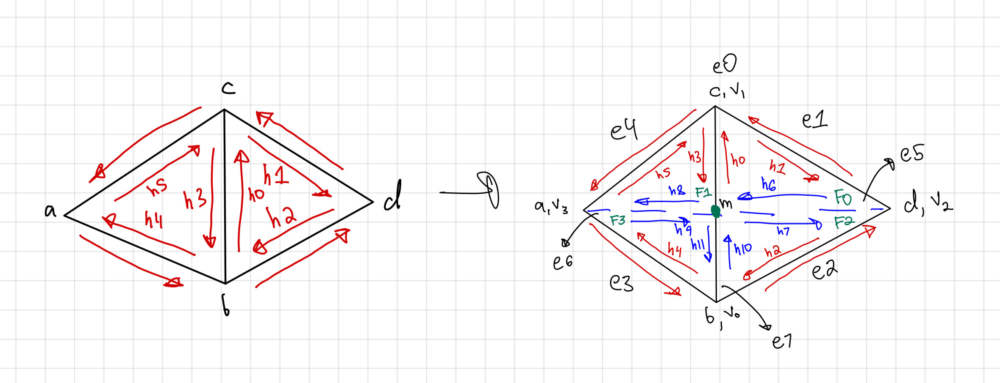
Our Edge Split Diagram by Angela
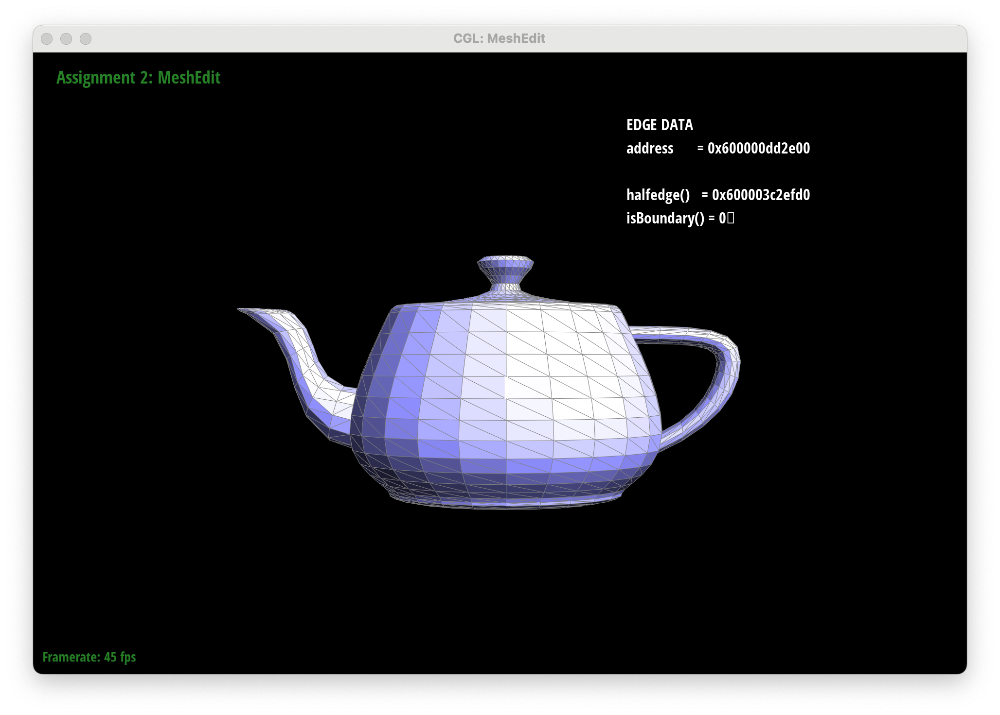
Original Teapot
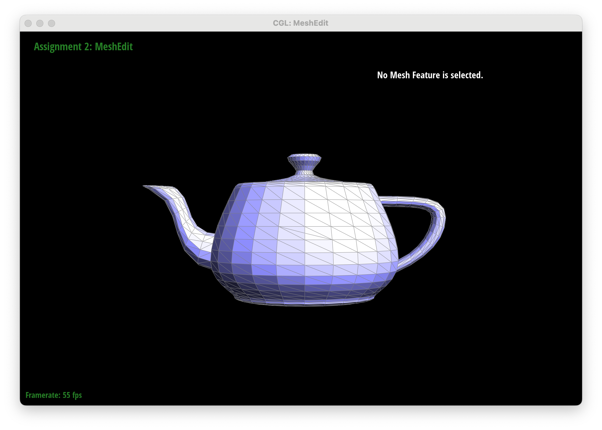
Teapot with First Split
Teapot with More Splitting
Teapot Split and Flipped
Part 6: Loop subdivision for mesh upsampling
For our loop subdivision problem, we initially focused on computing the new positions for all the verices in the input mesh via the Loop Division subrule
and later storing these positions within Vertex::newPosition. We also wanted to mark whether each vertex was new or from the original mesh.
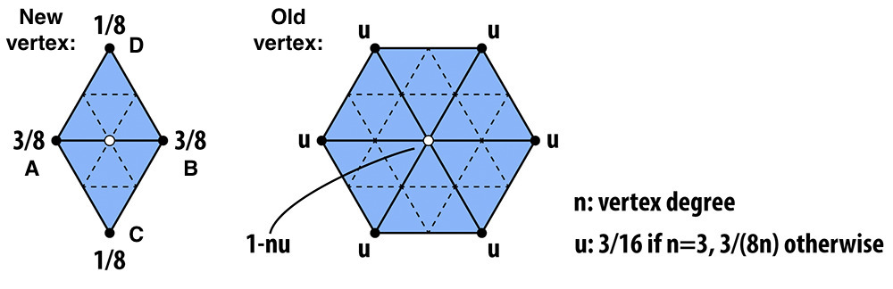
Visualization for updating the new vertices
Then we iterated through each of the edges and compute the updated vertex positions that were associated with the edges and store them within Edge::newPosition.
Lastly, we focused on splitting every edge within our mesh in any order. To do so, we created a vector for holding each of our original edges and then update each of the
edges that we do add with the isNew property. This made it easier in order too loop through all the edges we now have, check which edges are new, and then later flip any
new edges that were connected with a new and old vertex.
After this, all we needed to do was copy the new vertex positions into the final Vertex::position slot and we were done!
One of the issues we had while debugging was how our cube was shaped oddly and not smoothing out as we continued to do loop subdivision on it. It turned out that the simple fix was that we needed
to go back into our pt.5 implementation of split edge and update the vertices and edges which were new since this was also a part of the part 6 implementation! We also had an odd indent occurring
within our mesh where parts were going inward, but this similarly was an easy fix by updating all of the edges with the corresponding half edges afterwards.
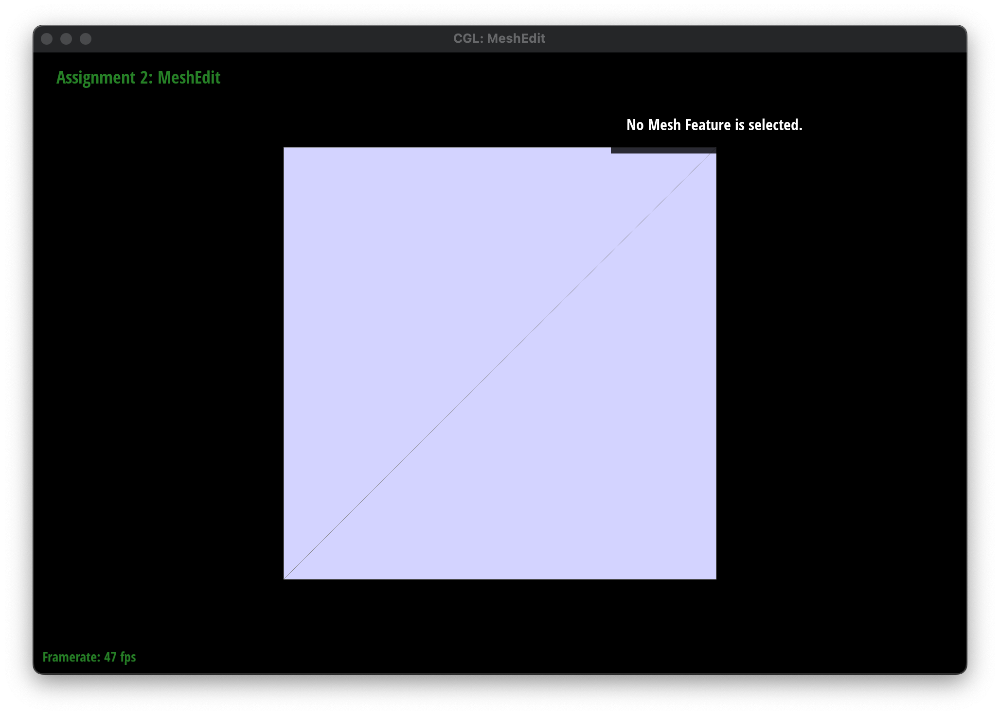
Initial Cube
Cube with Indent
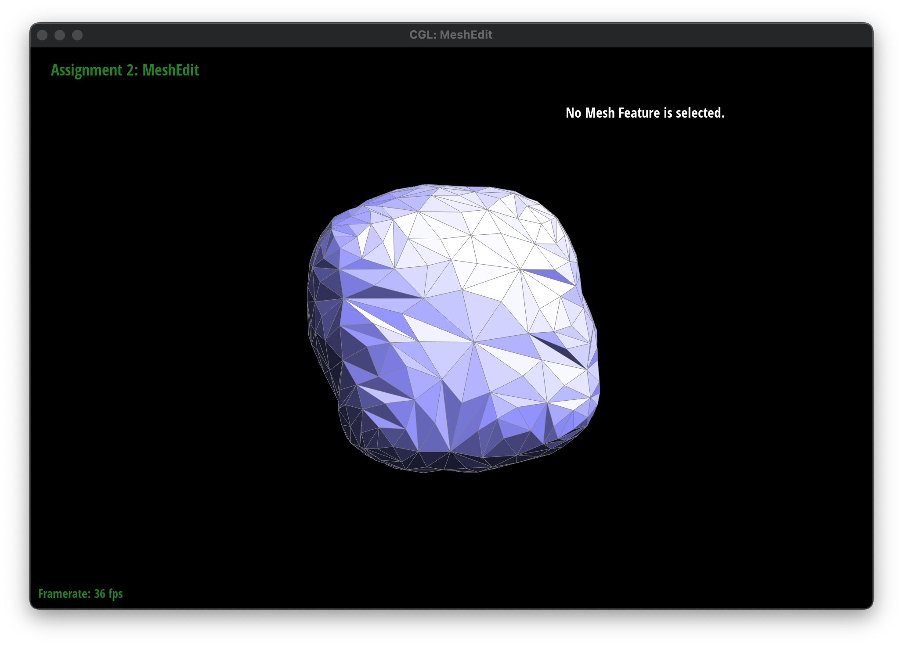
Cube with Subdivision Smoothing Error
After Loop Subdivision
Initial Cube
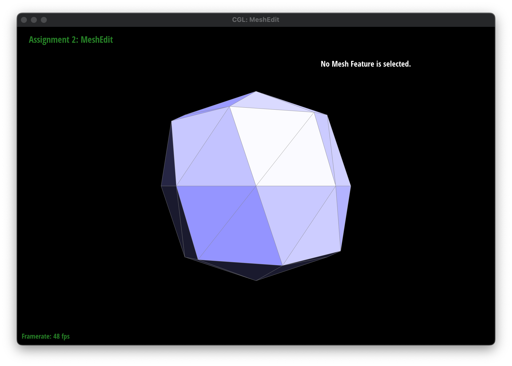
After one Loop Subdivision Cube
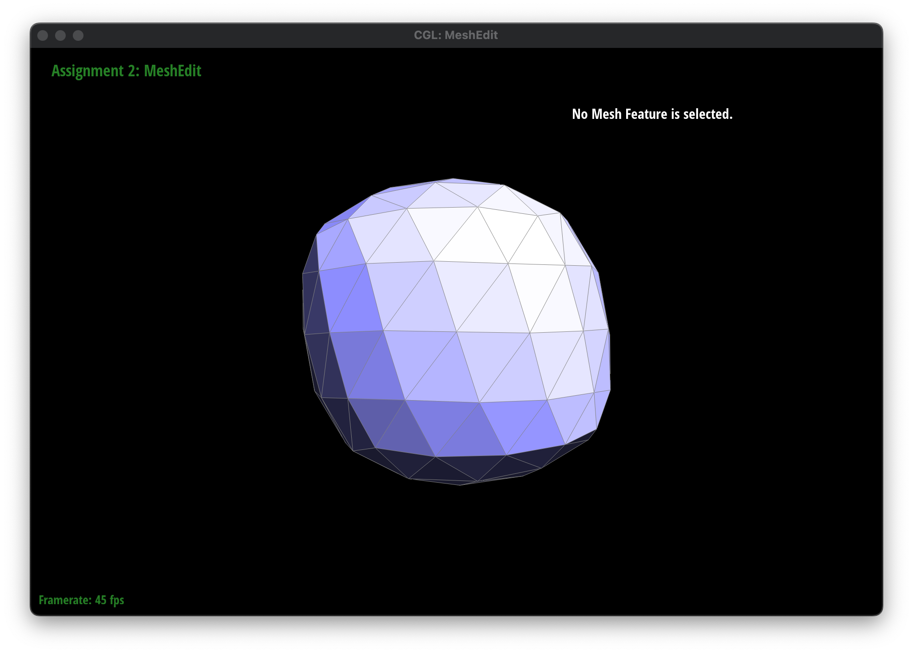
After two Loop Subdivision Cube
After three Loop Subdivision Cube
We noticed that, after the loop subdivision, there was a sort of smoothing effect due to the averaging of each of the vertex positions and an
increase in the number of faces and vertices overall due to the corresponding subdivision. However, each of the meshes still approximately maintained the
general form of the original mesh.
This effect also means that for sharp corners and edges, they lose their overall sharpness and become more round as a result. This makes it more difficult when
trying to work with loop subdivision and trying to maintain the original sharpness within the mesh. By pre-splitting edges, you can control how certain areas are smoothed
and help preserve more of the sharpness that was present in the original mesh. This is implemented by ccreating additional vertices specifically positioned to maintain sharpness
during subdivision.
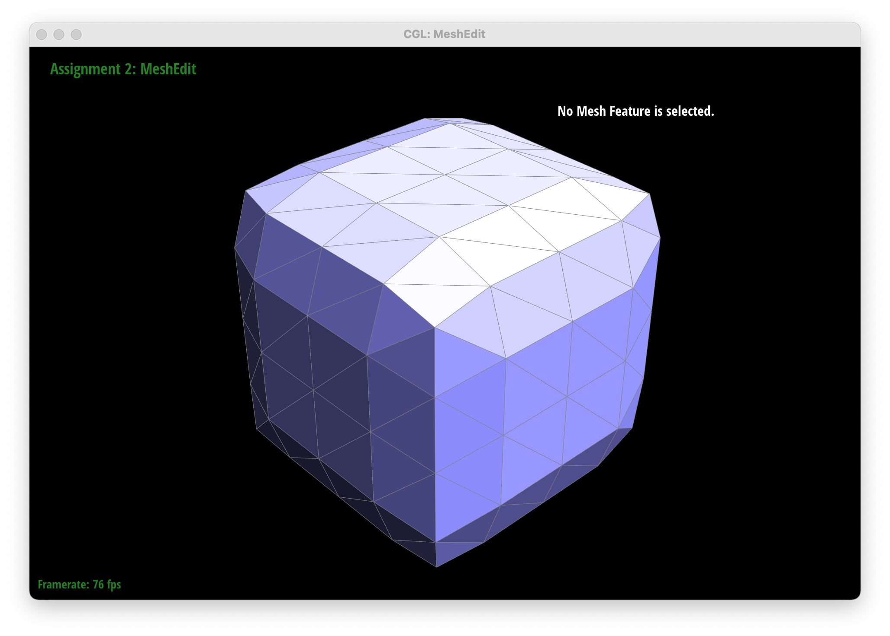Presplit Cube 1 Loop
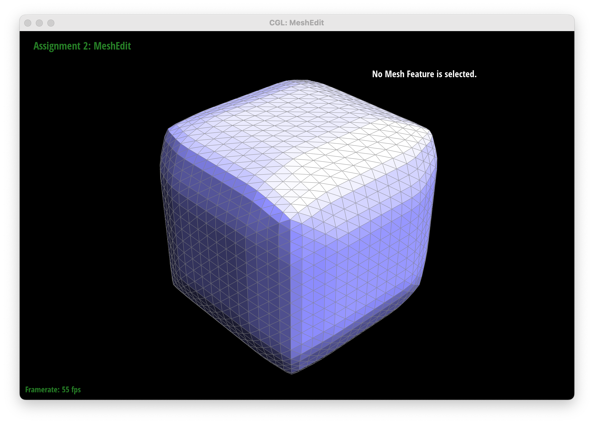Presplit Cube 2 Loop
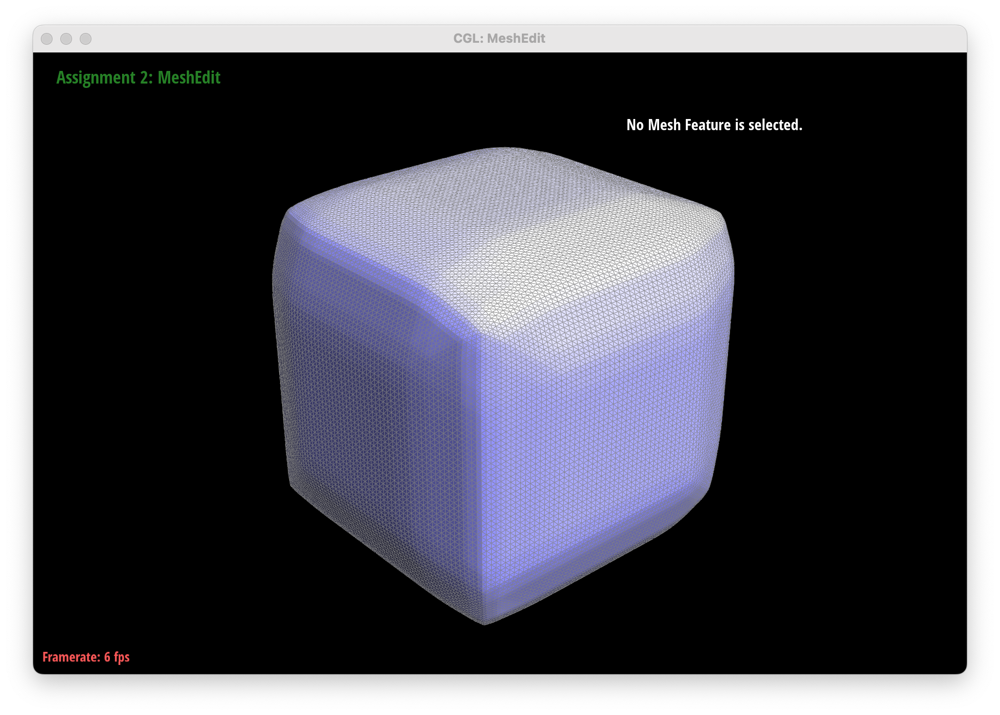Presplit Cube 3 Loop
Next, we focused on preprocessing our cube for symmetric subdivision. By identifying the sharp edges, we can split them and add new vertices along the midpoints of these new edges.
This allows for the sharp features to still be preserved while we are completing loop subdivision. We can check on neighbor vertices for their proximity and otherwise process normally.
While previously we had it so that sharp edges were processed with the similar effect of subdivision, now sharp edges have a type of subdivision which everything is symmetric and still
maintaining the original sharpness property.
Thanks for reading, this was definitely a fun and great learning experience that took way longer than expected (as expected from Hofstadter's Law)!
Citations
“CS 418 - Half-Edge Data Structure.” Illinois.edu, 2023, cs418.cs.illinois.edu/website/text/halfedge.html. Accessed 5 Mar. 2025.
Rodriguez, Jorge. “Math for Game Developers -Triangle Mesh Normals.” Youtube.com, 2014, www.youtube.com/watch?v=nS3qwFOPieg. Accessed 5 Mar. 2025.